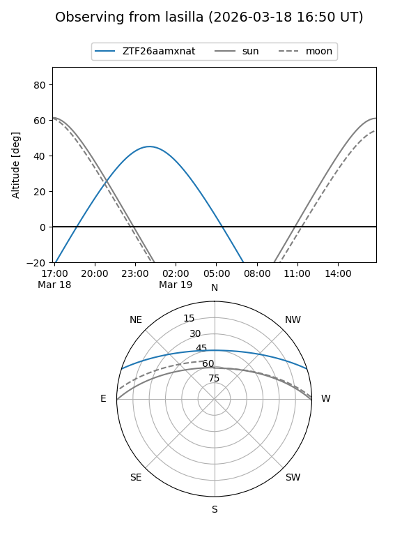
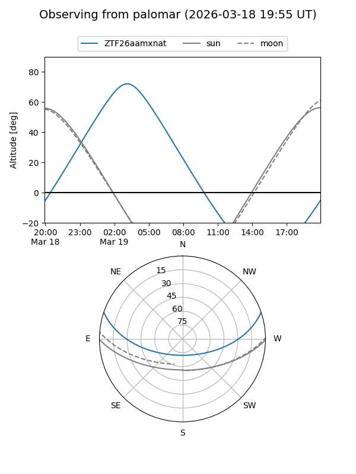

ZTF26aamxnat
Target ZTF26aamxnat at 2026-03-19 04:35
Aliases and brokers:
FINK: link
Lasair: link
ALeRCE: link
alt names
ZTF26aamxnat (ztf,fink_ztf)
Coordinates:
equatorial (ra, dec) = 106.2266,+15.60142
equatorial (HMS+DMS) = 07:04:54.38,+15:36:05.10
galactic (l, b) = (200.4090,+9.96111)
Flags:
Photometry:
last ztfg=18.16
1 ztfg detections
Lightcurve
Visibility


Additional plots